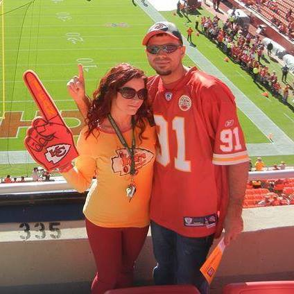
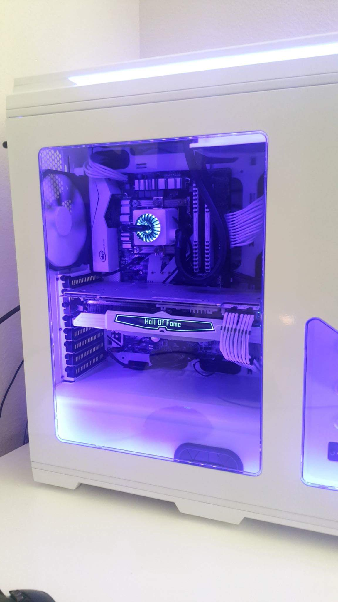

Welcome
 
My background & interest.
I have spent the last 10 years of my life welding and 5 of those years traveling the U.S. while welding. I was lucky enough to have a job that gave me the means and opportunity to travel for many years of my life. Now as you can tell I am enrolled at OTC for my CIS degree. Which I hope will help me find a career in programming or preferably building costume power house computers. When I’m not hanging out with my wife I enjoy spending my free time tearing electronics apart and tinkering. I'm also a big-time gamer (PC and PlayStation) and will get lost in them for hours. A few games I enjoy are Call Of Duty (not counting Advanced Warfare or Infinite Warfare), Modern Warfare, PUBG, Overwatch and Destiny. On September 6th, be sure to check out my Twitch page at BeardeDGameRrr for all the new upcoming Destiny 2 information and walkthrough tutorials. Im also a BIG time Kansas City Chiefs fan.